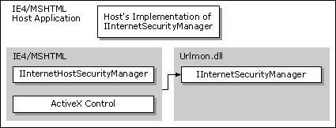
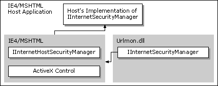
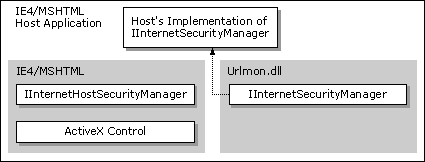
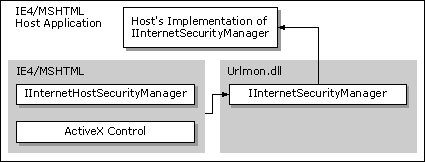
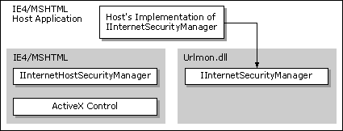
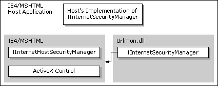
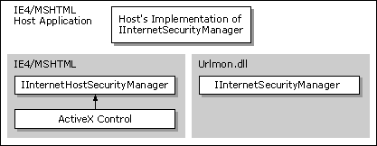
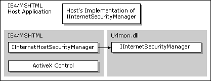
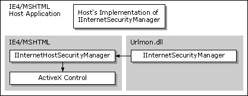

| ||||||
URL security zones provide applications the ability to either interact with the default URL security zone manager or create a customized manager. This functionality is exported by the URL monikers dynamic-link library (Urlmon.dll). For information on the other APIs exported by the Urlmon.dll, see Asynchronous Pluggable Protocols and URL Monikers.
This documentation assumes that you have an understanding of Microsoft® Win32® programming. You should also have an understanding of OLE and COM programming, as well as an understanding of the format and syntax of URLs. For more information, see RFC 1738, Uniform Resource Locators (URL). You can find this document at ftp://ftp.isi.edu/in-notes/rfc1738.txt  .
.
To compile programs that use the functionality provided by URL security zones, make sure the Urlmon.h header file is in the include directory and the Urlmon.lib library file is in the library directory of the C/C++ compiler you use.
To fully understand URL security zones, you need to understand a few terms.
Previously, Microsoft® Internet Explorer utilized the same security policy for all URL namespaces. Each URL action in a particular security level was handled by a predetermined URL policy, which could not be changed. Beginning with Internet Explorer 4.0, URL namespaces are divided into URL security zones, which have different levels of trust assigned to them. Users can easily customize the default URL security zones by changing the URL policy settings for each URL action with the user interface provided by Internet Explorer.
Each URL security zone has a set of URL actions with a URL policy assigned to each action. The URL actions cover all operations that have security implications. A URL policy is assigned to each URL action to determine how that URL action will be handled. For example, URLACTION_JAVA_PERMISSIONS would be checked for operations related to Java applets. To force all Java applets to run out of a sandbox (that is, prevent them from doing anything that would be a security risk to the local computer), the URL policy would be set to URLPOLICY_JAVA_HIGH.
Some URL actions are an aggregate of two or more URL actions. The user interface for the default URL security zone manager would allow the user to set the aggregate value only (such as URLACTION_HTML_SUBMIT_FORMS). The browser would call the specific value (such as URLACTION_HTML_SUBMIT_FORMS_FROM) because it is reacting to that particular action. If the aggregate URL action has a URL policy set, that policy is used for the aggregate URL action and the specific URL actions it aggregated. All security zone managers must be designed to handle calls to the specific URL actions and know where to find the appropriate URL policy.
The following table contains the aggregate URL actions and their aggregates.
The following table contains the URL actions that are used by the default URL security zone manager and the URL policies that can be assigned to them.
The default URL security zones used by Internet Explorer are:
There is also a Local Machine zone that is used for files located on the user's computer.
The Local intranet zone is used for content located on a company's intranet. Because the servers and information would be within a company's firewall, a user or company could assign a higher trust level to the content on the intranet.
By default, the Local intranet zone uses the Medium-Low template. In Internet Explorer 4.0, the Local intranet zone used the Medium template—the Medium-Low template wasn't introduced until Internet Explorer 5.
In addition to the settings defined by the default template, a hidden setting, URLACTION_SHELL_WEBVIEW_VERB, is set to URLPOLICY_ALLOW.
The Trusted sites zone is used for content located on Web sites that are considered more reputable and/or trustworthy than other sites on the Internet. Users can use this zone to assign a higher trust level to these sites to minimize the number of authentication requests. The URLs of these trusted Web sites would need to be mapped into this zone by the user.
By default, the Trusted sites zone uses the Low template.
In addition to the settings defined by the default template, a hidden setting, URLACTION_SHELL_WEBVIEW_VERB, is set to URLPOLICY_ALLOW.
The Internet zone is used for the Web sites on the Internet that do not belong to another zone. The default settings would cause the user to be prompted whenever potentially unsafe content was about to be downloaded. Web sites that are not mapped into other zones automatically fall into this zone.
By default, the Internet zone uses the Medium template.
In addition to the settings defined by the default template, a hidden setting, URLACTION_SHELL_WEBVIEW_VERB, is set to URLPOLICY_QUERY.
The Restricted sites zone is used for Web sites that contain content that could cause, or could have previously caused, problems when downloaded. This zone could be used to cause the user to be prompted every time potentially unsafe content was about to be downloaded or prevent that content from being downloaded. The URLs of these untrusted Web sites would need to be mapped into this zone by the user.
By default, the Restricted sites zone uses the High template.
In addition to the settings defined by the default template, a hidden setting, URLACTION_SHELL_WEBVIEW_VERB, is set to URLPOLICY_QUERY.
The Local Machine zone is an implicit zone that is used for content that exists on the user's computer. The content found on the user's computer, except for content cached by Internet Explorer on the local system, is treated with a high level of trust.
Content that has been cached by Internet Explorer is accessed through the URL of origin and is assigned to the appropriate zone.
The following table contains the default settings for the Local Machine zone.
Asynchronous pluggable protocols can specify how their URLs should be assigned to a security zone. The IInternetProtocolInfo::ParseUrl method (using the PARSE_SECURITY_URL value) should return a URL that the security manager can use to make decisions.
Currently, the URL security zone settings are stored in the registry under the following keys:
HKEY_LOCAL_MACHINE\Software\Microsoft\Windows\CurrentVersion\
Internet Settings\Zones
HKEY_CURRENT_USER\Software\Microsoft\Windows\CurrentVersion\
Internet Settings\Zones
The information under these registry keys should be used for reference only. Future versions of Internet Explorer may not use the registry to store URL security zone information, so developers should not directly manipulate the registry.
There are two situations where you would use the URL security zone interfaces:
Applications can manage the default URL security zone settings by using the IInternetZoneManager interface. Any changes made using IInternetZoneManager will not be static, because the user could override them. In most cases, applications that need to control the URL security zone settings should create an application that hosts the WebBrowser control or MSHTML and implement their own security manager.
Interfaces related to URL security zones:
The WebBrowser control or MSHTML hosts could create a security manager (by implementing the IInternetSecurityManager interface) that handles the URL actions and policies that are important to the host. Other URL actions and policies would be passed to the default security manager so it could handle them appropriately. The IInternetSecurityMgrSite interface would be used to handle Windows®-related information from the component so that the customized security manager could handle any user interface it needed.
To create a customized security manager, the component must implement the IInternetSecurityManager interface. Any methods or URL actions that the customized security manager wants the default security manager to act on should return INET_E_DEFAULT_ACTION.
The component must also implement an object that supports the IOleClientSite interface when embedding either the WebBrowser control or MSHTML.
The following steps occur for a URL action.






Note The URL security zone API offers support only for a single, customized security manager to delegate URL actions back to the default security manager. If more than one customized security manager is implemented, the additional security managers must explicitly find and invoke the security manager above them to allow multiple delegations to operate correctly.
Components hosted by the WebBrowser control or MSHTML might need to query the security manager for the URL policies being implemented in the URL security zone they are in. These components include script engines (Microsoft® JScript® [compatible with ECMA 262 language specification] and Microsoft® Visual Basic® Scripting Edition), controls, Java applets, and so on. For example, the component download mechanism in Internet Explorer 4.0 needs to ask the security manager if it can download unsigned ActiveX® Controls. The component calls the IInternetHostSecurityManager::ProcessUrlAction method to check what the policy is on Java applets to help make its decision.
To query for URL policies, these components use the IInternetHostSecurityManager interface. The component must also have the address of a site interface implemented by the WebBrowser control or MSHTML. The exact site interface would depend on the type of component being hosted. For example, a script engine should have the IActiveScriptSite interface implemented, while controls would implement an IOleClientSite interface. To get the address of this interface:


If a custom security manager was implemented by a host application, the default Internet Security Manager would pass the call up to the custom security manager's IInternetSecurityManager interface.

A customized URL security manager can be created for applications that host either the WebBrowser control or MSHTML by implementing the IInternetSecurityManager interface. Most of the IInternetSecurityManager methods, except IInternetSecurityManager::ProcessUrlAction, would only need to return INET_E_DEFAULT_ACTION to defer the call to the default security manager.
The following example shows an implementation of the IInternetSecurityManager::ProcessUrlAction method for a customized security manager that wants to require that data be encrypted.
HRESULT MySecurityManager::ProcessUrlAction(
LPWSTR pwszUrl,
DWORD dwAction,
BYTE *pPolicy,
DWORD cbPolicy,
DWORD dwReserved
)
{
DWORD dwPolicy = URLPOLICY_ENCRYPT_REQUIRED;
if (dwAction == URLACTION_ENCRYPT_DATA)
{{
if (cbPolicy >= sizeof (DWORD))
{
*(DWORD *)pPolicy = dwPolicy;
return S_OK;
}
else
return S_FALSE;
}
else
return INET_E_DEFAULT_ACTION;
}
Note The default security manager cannot be replaced by a customized security manager.
To access the default Internet Security Manager and Internet Zone Manager objects, the client application should use the CoCreateInstance function to create an instance of these objects.
The following sample creates an instance of both the Internet Security Manager and the Internet Zone Manager.
HRESULT hr;
IInternetSecurityManager *pSecurityMgr;
IInternetZoneManager *pZoneMgr;
hr = CoCreateInstance(CLSID_InternetSecurityManager, NULL, CLSCTX_INPROC_SERVER,
IID_IInternetSecurityManager, (void**)&pSecurityMgr);
hr = CoCreateInstance(CLSID_InternetZoneManager, NULL, CLSCTX_INPROC_SERVER,
IID_IInternetZoneManager, (void**)&pZoneMgr);
The following topic is related to URL security zones.
Did you find this topic useful? Suggestions for other topics? Write us!
© 1999 Microsoft Corporation. All rights reserved. Terms of use.